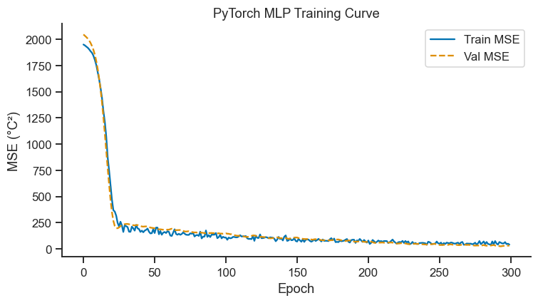
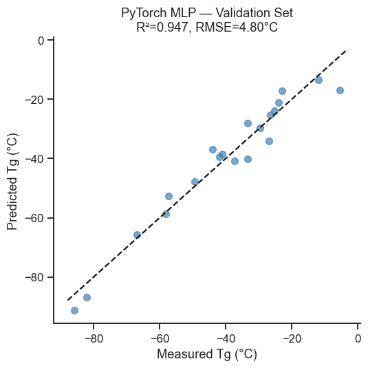
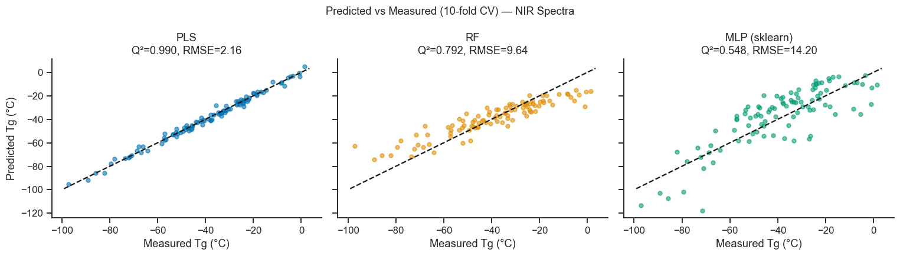

20. Neural Networks and Deep Learning Basics#
A neural network is a cascade of linear transformations interleaved with nonlinear activation functions. Even a shallow (one hidden layer) network is a universal approximator — it can represent any continuous function given enough neurons and appropriate training.
Topics covered
The perceptron and the multi-layer perceptron (MLP) architecture
Forward pass, loss function, and backpropagation
Quick prototyping with
sklearn.neural_network.MLPRegressorBuilding and training a network with PyTorch
Training curves, regularisation, and early stopping
Comparison: PLS vs RF vs MLP for NIR spectra prediction
Brief introduction to convolutional and graph neural networks for materials
import numpy as np
import pandas as pd
import matplotlib.pyplot as plt
import seaborn as sns
from sklearn.preprocessing import StandardScaler
from sklearn.model_selection import cross_val_predict, KFold
from sklearn.metrics import r2_score, mean_squared_error
from sklearn.neural_network import MLPRegressor
from sklearn.cross_decomposition import PLSRegression
from sklearn.ensemble import RandomForestRegressor
import torch
import torch.nn as nn
import torch.optim as optim
from torch.utils.data import DataLoader, TensorDataset
sns.set_theme(style='ticks', palette='colorblind')
plt.rcParams.update({'figure.dpi': 110, 'font.size': 11})
rng = np.random.default_rng(2024)
torch.manual_seed(0)
device = 'cuda' if torch.cuda.is_available() else 'cpu'
print(f'Using device: {device}')
Using device: cpu
20.1 The Perceptron and MLP Architecture#
A single neuron is really just a small regression model wearing a disguise: it multiplies each input by a weight, adds them all up plus a bias term (exactly like MLR’s \(\beta_0 + \beta_1x_1 + \cdots\)), and then passes that sum through a simple nonlinear function \(f\):
The nonlinear step is what makes a network more than “just regression” — without it, stacking layers of neurons would collapse back into one single linear model, no matter how many layers you stacked (adding straight lines together only ever gives you another straight line). The nonlinearity lets the network bend and combine simple functions into arbitrarily complex shapes.
Common activation functions:
Name |
Formula |
Use |
|---|---|---|
ReLU |
\(\max(0,x)\) |
Hidden layers (default) |
Sigmoid |
\(1/(1+e^{-x})\) |
Binary output |
Tanh |
\((e^x-e^{-x})/(e^x+e^{-x})\) |
Hidden layers (zero-centred) |
Linear |
\(x\) |
Regression output |
An MLP (multi-layer perceptron) stacks layers of these neurons, each layer’s output feeding into the next layer’s input. The depth (number of layers) and width (neurons per layer) control how flexible a shape the network can learn — more of either lets it fit more complex relationships, at the cost of needing more data to avoid simply memorising noise (overfitting, the same concern as an overly deep decision tree in Notebook 19).
20.2 Dataset: NIR Polymer Spectra → Tg#
We reuse the NIR spectral dataset from Notebook 15 (PLS, Part IV). 100 polymer samples, 50 wavenumber channels, response = glass transition temperature Tg (°C).
# ── Reproduce NIR dataset ─────────────────────────────────────────────────────
n_samples = 100
n_waves = 50
wavenums = np.linspace(3000, 4000, n_waves)
def gaussian(x, c, w): return np.exp(-0.5*((x-c)/w)**2)
profiles = np.column_stack([
gaussian(wavenums, 3100, 60),
gaussian(wavenums, 3300, 80),
gaussian(wavenums, 3500, 50),
gaussian(wavenums, 3700, 70),
gaussian(wavenums, 3900, 55),
])
C = rng.normal(0, 1, (n_samples, 5))
Tg = -40 + 15*C[:,0] - 8*C[:,1] + 12*C[:,2] + 5*C[:,3] - 3*C[:,4] + rng.normal(0, 2, n_samples)
X_nir = C @ profiles.T + rng.normal(0, 0.05, (n_samples, n_waves))
scaler_nir = StandardScaler()
X_sc = scaler_nir.fit_transform(X_nir)
kf = KFold(n_splits=10, shuffle=True, random_state=42)
print(f'X: {X_sc.shape}, Tg range: {Tg.min():.1f}–{Tg.max():.1f} °C')
X: (100, 50), Tg range: -97.1–1.4 °C
20.3 Quick Start: sklearn MLPRegressor#
# ── sklearn MLP ───────────────────────────────────────────────────────────────
mlp_sk = MLPRegressor(
hidden_layer_sizes=(64, 32),
activation='relu',
solver='adam',
max_iter=500,
learning_rate_init=1e-3,
alpha=1e-4, # L2 regularisation
random_state=0,
early_stopping=True,
validation_fraction=0.1,
)
y_mlp_sk = cross_val_predict(mlp_sk, X_sc, Tg, cv=kf)
q2_mlp = r2_score(Tg, y_mlp_sk)
rmse_mlp = np.sqrt(mean_squared_error(Tg, y_mlp_sk))
print(f'sklearn MLP Q² = {q2_mlp:.4f}, RMSECV = {rmse_mlp:.2f} °C')
sklearn MLP Q² = 0.5482, RMSECV = 14.20 °C
Interpreting the sklearn MLP Result
Q² = 0.548 is clearly the weakest result you will see for this dataset in this notebook (PLS and RF both do better — see the comparison in Section 20.5) — a somewhat counter-intuitive result, since neural networks have a reputation as the most powerful method.
The reason is data size vs. model complexity: each CV fold trains on roughly 90 samples with 50 input features, but a (64, 32) hidden-layer MLP has several thousand trainable weights. With that few samples per weight, even L2 regularisation (
alpha=1e-4) and early stopping struggle to prevent the network from fitting noise rather than signal.early_stopping=Truealso carves off 10% of each fold’s training data as its own internal validation set — with ~90 samples per fold, that is only about 9 points deciding when to stop training, a very noisy signal.Take-home point: a neural network is not automatically the strongest model — on small, tabular datasets like this one, PLS (built for exactly this kind of high-collinearity spectral problem) and RF both out-perform an off-the-shelf MLP. Neural networks earn their reputation on large datasets or when the architecture is carefully matched to the problem (see the PyTorch network below and the CNN/GNN discussion in Section 20.6).
20.4 Building a Network with PyTorch#
MLPRegressor above hides the training details behind one .fit() call.
Building the same network in PyTorch makes the training loop explicit,
which is worth seeing at least once conceptually:
Forward pass — feed a batch of spectra through the network to get predictions, exactly as the formula in Section 20.1 describes, layer after layer.
Loss function — compare the predictions to the true Tg values with a single number summarising “how wrong were we?” (mean squared error here — the same quantity minimised by ordinary least squares in Part III).
Backpropagation — work backwards through the network applying the chain rule to figure out how much each individual weight contributed to that error. This is the computational trick that makes training deep networks feasible: instead of guessing how to adjust thousands of weights, backprop computes the exact direction each one should move to reduce the loss.
Optimiser step — nudge every weight a small distance in the direction backprop identified (here, the Adam optimiser — a more adaptive version of the basic “take a step downhill” idea used by gradient-based optimisation throughout this course).
Repeating these four steps over many epochs (passes through the training data) gradually reduces the loss — the training curve below tracks this directly. The validation loss curve alongside it is what justifies early stopping: once validation loss stops improving even as training loss keeps falling, the network has moved from learning the underlying trend to memorising noise in the training set, and further training should be stopped.
# ── Define network ────────────────────────────────────────────────────────────
class SpectralMLP(nn.Module):
def __init__(self, n_input, hidden=(64, 32), dropout=0.2):
super().__init__()
layers = []
prev = n_input
for h in hidden:
layers += [nn.Linear(prev, h), nn.ReLU(), nn.Dropout(dropout)]
prev = h
layers.append(nn.Linear(prev, 1))
self.net = nn.Sequential(*layers)
def forward(self, x):
return self.net(x).squeeze(-1)
# ── Train / validation split ──────────────────────────────────────────────────
n_train = 80
idx = rng.permutation(n_samples)
X_tr = torch.tensor(X_sc[idx[:n_train]], dtype=torch.float32).to(device)
y_tr = torch.tensor(Tg[idx[:n_train]], dtype=torch.float32).to(device)
X_va = torch.tensor(X_sc[idx[n_train:]], dtype=torch.float32).to(device)
y_va = torch.tensor(Tg[idx[n_train:]], dtype=torch.float32).to(device)
train_ds = TensorDataset(X_tr, y_tr)
train_dl = DataLoader(train_ds, batch_size=16, shuffle=True)
model = SpectralMLP(n_waves, hidden=(64, 32), dropout=0.2).to(device)
optimizer = optim.Adam(model.parameters(), lr=1e-3, weight_decay=1e-4)
criterion = nn.MSELoss()
train_losses, val_losses = [], []
best_val, best_state = np.inf, None
patience, patience_ctr = 30, 0
for epoch in range(300):
model.train()
batch_losses = []
for xb, yb in train_dl:
optimizer.zero_grad()
loss = criterion(model(xb), yb)
loss.backward()
optimizer.step()
batch_losses.append(loss.item())
train_losses.append(np.mean(batch_losses))
model.eval()
with torch.no_grad():
val_loss = criterion(model(X_va), y_va).item()
val_losses.append(val_loss)
# Early stopping
if val_loss < best_val - 1e-4:
best_val = val_loss
best_state = {k: v.clone() for k, v in model.state_dict().items()}
patience_ctr = 0
else:
patience_ctr += 1
if patience_ctr >= patience:
print(f'Early stopping at epoch {epoch+1}')
break
model.load_state_dict(best_state)
# ── Training curve ────────────────────────────────────────────────────────────
fig, ax = plt.subplots(figsize=(7, 4))
ax.plot(train_losses, lw=1.5, label='Train MSE')
ax.plot(val_losses, lw=1.5, label='Val MSE', ls='--')
ax.set_xlabel('Epoch')
ax.set_ylabel('MSE (°C²)')
ax.set_title('PyTorch MLP Training Curve')
ax.legend()
sns.despine(ax=ax)
plt.tight_layout()
plt.show()

Interpreting the PyTorch Training Curve
Train and validation MSE curves track almost identically throughout all 300 epochs — no gap opens up between them, meaning dropout (0.2) and weight decay (1e-4) successfully kept the network from overfitting the 80 training samples.
The steep drop over the first ~25 epochs is the network learning the dominant (linear, PLS-like) structure in the data; the long, nearly flat tail from epoch ~50 onward is slow refinement of the smaller residual structure.
Because train and validation loss never diverge, the patience-based early stopping (patience=30 epochs) was never triggered — training ran the full 300 epochs. That does not make early stopping pointless here: it is a safety net that would have activated had the network started memorising noise, exactly the failure mode discussed for GBM in Notebook 19 (Part VI).
# ── Evaluate on validation set ────────────────────────────────────────────────
model.eval()
with torch.no_grad():
Tg_va_pred = model(X_va).cpu().numpy()
Tg_va_true = Tg[idx[n_train:]]
r2_pt = r2_score(Tg_va_true, Tg_va_pred)
rmse_pt = np.sqrt(mean_squared_error(Tg_va_true, Tg_va_pred))
print(f'PyTorch MLP R² (val) = {r2_pt:.4f}, RMSE (val) = {rmse_pt:.2f} °C')
fig, ax = plt.subplots(figsize=(5, 5))
ax.scatter(Tg_va_true, Tg_va_pred, s=40, alpha=0.7, color='steelblue')
lims = [Tg_va_true.min()-2, Tg_va_true.max()+2]
ax.plot(lims, lims, 'k--', lw=1.5)
ax.set_xlabel('Measured Tg (°C)')
ax.set_ylabel('Predicted Tg (°C)')
ax.set_title(f'PyTorch MLP — Validation Set\n' + f'R²={r2_pt:.3f}, RMSE={rmse_pt:.2f}°C')
sns.despine(ax=ax)
plt.tight_layout()
plt.show()
PyTorch MLP R² (val) = 0.9468, RMSE (val) = 4.80 °C

Interpreting the Validation Scatter
R² = 0.947 on this validation set looks dramatically better than the sklearn MLPRegressor’s 10-fold CV Q² = 0.548 above — but the two numbers are not directly comparable.
The sklearn score is averaged over 10 different train/test folds (a robust estimate). The PyTorch score comes from a single 80/20 split — with only 20 validation samples, a single split has much higher variance than a 10-fold average, and could look better or worse than the “true” generalisation performance purely by which 20 samples happened to land in the validation set.
That said, the improvement is not purely luck: the PyTorch network used explicit dropout and weight decay the default sklearn MLP does not, and its training curve above showed genuinely stable, non-overfit convergence.
The rigorous way to settle the comparison is to wrap the same PyTorch training loop in 10-fold cross-validation before trusting this number over the sklearn MLP’s — Exercise 1 is a natural place to try this.
20.5 Comparison: PLS vs RF vs MLP#
# ── Collect CV results for all methods ───────────────────────────────────────
pls_bench = PLSRegression(n_components=4, scale=False)
rf_bench = RandomForestRegressor(n_estimators=200, max_features='sqrt',
min_samples_leaf=2, random_state=0)
results = {}
for name, model_b in [('PLS', pls_bench), ('RF', rf_bench), ('MLP (sklearn)', mlp_sk)]:
yp = cross_val_predict(model_b, X_sc, Tg, cv=kf)
results[name] = {'Q2': r2_score(Tg, yp),
'RMSE': np.sqrt(mean_squared_error(Tg, yp)),
'y_cv': yp}
fig, axes = plt.subplots(1, 3, figsize=(14, 4), sharey=True, sharex=True)
for ax, (name, res), color in zip(axes, results.items(),
sns.color_palette('colorblind', 3)):
ax.scatter(Tg, res['y_cv'], s=20, alpha=0.6, color=color)
lims = [Tg.min()-2, Tg.max()+2]
ax.plot(lims, lims, 'k--', lw=1.5)
ax.set_title(f'{name}\nQ²={res["Q2"]:.3f}, RMSE={res["RMSE"]:.2f}')
ax.set_xlabel('Measured Tg (°C)')
sns.despine(ax=ax)
axes[0].set_ylabel('Predicted Tg (°C)')
plt.suptitle('Predicted vs Measured (10-fold CV) — NIR Spectra', fontsize=12)
plt.tight_layout()
plt.show()
print(f"\n{'Model':<14} {'Q²':>8} {'RMSECV':>10}")
print('-' * 36)
for name, res in results.items():
print(f"{name:<14} {res['Q2']:>8.4f} {res['RMSE']:>10.2f}")

Model Q² RMSECV
------------------------------------
PLS 0.9895 2.16
RF 0.7916 9.64
MLP (sklearn) 0.5482 14.20
Interpreting the Comparison#
In this NIR spectroscopy case, 10-fold cross-validated results were PLS: Q²=0.9895, RMSECV=2.16°C; RF: Q²=0.7916, RMSECV=9.64°C; MLP (sklearn): Q²=0.5482, RMSECV=14.20°C — PLS wins by a wide margin, and the sklearn MLP is clearly the weakest of the three. Note on the PyTorch model: its R²=0.947 in Section 20.4 is not directly comparable to the table above — it was evaluated on a single 20-sample hold-out split, not a 10-fold CV average, and it used stronger regularisation (dropout, weight decay) than the default sklearn MLP. See the take-home box after the validation scatter plot for the full explanation.
PLS performs excellently because the data has a strong linear latent structure — the five spectral profiles were designed to be linearly mixed. PLS finds this efficiently in just 4 components.
RF also performs well but requires more data to match PLS on intrinsically linear problems.
MLP can match or exceed PLS when the dataset is large enough and the relationship is genuinely nonlinear, but requires more careful hyperparameter tuning and training.
When to choose each method:
Scenario |
Recommended |
|---|---|
Spectroscopy, chemometrics (< 200 samples) |
PLS |
Mixed linear/nonlinear, 100–10 000 samples |
RF or GBM |
Large dataset (> 10 000), images, graphs |
Deep learning (CNN, GNN) |
Uncertain — compare all |
Cross-validated benchmark |
20.6 Beyond MLP: CNNs and Graph Neural Networks (Concepts)#
Convolutional Neural Networks (CNNs) for Spectra#
Instead of a fully connected MLP, a 1-D CNN slides a learnable filter along the spectrum. This is particularly powerful for spectral data because:
Local filters learn characteristic absorption peaks regardless of position
Weight sharing dramatically reduces the number of parameters
Translational equivariance is built-in
# Sketch of a 1-D CNN for spectral data (PyTorch)
class SpectralCNN(nn.Module):
def __init__(self, n_channels, n_output=1):
super().__init__()
self.conv = nn.Sequential(
nn.Conv1d(1, 16, kernel_size=7, padding=3), nn.ReLU(),
nn.Conv1d(16, 32, kernel_size=5, padding=2), nn.ReLU(),
nn.AdaptiveAvgPool1d(16),
)
self.fc = nn.Sequential(nn.Linear(32*16, 64), nn.ReLU(), nn.Linear(64, n_output))
def forward(self, x):
return self.fc(self.conv(x.unsqueeze(1)).flatten(1)).squeeze(-1)
Graph Neural Networks (GNNs) for Molecules/Crystals#
Atomic structures are naturally represented as graphs: atoms = nodes, bonds = edges. Message-passing GNNs (e.g. CGCNN, MEGNet) aggregate information from neighbouring atoms to predict bulk properties. They are the state-of-the-art for property prediction from crystal structure in computational materials science.
Exercises#
Architecture search: Try MLP architectures with 1, 2, and 3 hidden layers, varying the number of neurons. Plot Q² vs total parameter count. What is the smallest model that achieves Q² > 0.95?
Dropout regularisation: Increase the dropout rate from 0.2 to 0.5 in the PyTorch model. How does this affect the training curve and the validation R²?
Transfer learning concept: Suppose you have 500 NIR spectra from a different polymer system (different Tg range). Describe how you could (a) use the pre-trained weights from this notebook as initialisation (fine-tuning) and (b) freeze the first two hidden layers and only train the last layer. What are the expected benefits?